An Econometric Analysis of Turkish Art Markets:
Constructing Hedonic Price Indices
Hüseyin Taştan | YTU
Turkish Economic Association 32nd Conference on Economics
13-15 November 2025, Eastern Mediterranean University, Famagusta North Cyprus
Artwork: Nuri İyem / Köylü Kadınlar
Outline
- Introduction
- Data
- Sale Model
- Hedonic Regression Model
- Hedonic Price Indices
- Returns to Art Investment
- Conclusion
Artwork: Osman Hamdi Bey / Musicians
Introduction
Research Focus
- This study examines Turkish art markets through two econometric lenses:
- Liquidity dimension:
- What characteristics predict whether an artwork sells?
- How do sale probabilities differ by artist prominence?
- Price dimension:
- What explains auction prices?
- How do price determinants differ by artist prominence?
- Liquidity dimension:
- Data: Turkish paintings auction data, 1989-2020
Methods
- Sale probability analysis:
- Probit model of sale (1/0)
- Predicts: Artwork characteristics → Sale probability
- By segment: Prominent/Elite artists vs. the rest
- Price analysis:
- Hedonic regression of log(Sale price)
- Predicts: Artwork characteristics → Price levels
- Hedonic price index and return to art investments.
- By segment: Prominent vs. non-prominent
Introduction (Overview of the literature)
Global
- Early pessimistic view (1980s-1990s):
- Low real returns, high volatility
- Art underperforms financial assets significantly
- High transaction costs and illiquidity penalties
- More recently (2000-2010s):
- Positive real returns but Sharpe ratios lag equities
- Valuable diversification benefit: low correlation with stocks/bonds
- Heterogeneous returns across segments:
- Modern art outperforms contemporary (established > emerging artists)
- Investment-grade (top tier, liquid, “blue-chip”) outperforms speculative (lower tier, illiquid, uncertain value) (quality premium)
Studies on Turkish art markets
- Limited academic work on emerging market art; Turkish literature growing.
- Based on aggregate hedonic art indices, current evidence suggests:
- Small positive real returns and diversification benefits (Atukeren and Seçkin 2006)
- Integration with international art markets (Atukeren and Seçkin 2012)
- Underperformance vs. domestic equities but outperformance vs global aggregates (Demir et al. 2018),
- Some protection during financial crises (partial hedge/safe‑haven) during crises (Öztürkkal and Togan-Eğrican 2020)
- No examination of quality stratification/market segmentation within Turkish paintings auction market
Data
Artwork: Bedri Rahmi Eyüboğlu / İstanbul
Dataset Overview
Source and span
- Data is scraped from the www.lebriz.com which maintains a comprehensive archive of art auctions.
- Discontinued in 2023, but contains data spanning 1990s to 2020
- We focus on paintings only (exclude sculpture, lithography, editions, etc.)
- Transaction level data on auction items
- Not repeat sales
Variables and content
- Artist name, auction house, auction date
- Artwork characteristics: dimensions (width and height), type of paintings (oil on canvas, watercolor on paper, oil on wood, acrylic on canvas, etc.), whether signed or not,
- Opening prices (contains missing values)
- Sale prices (in TL and USD) if sold (hammer price)
Artists
How do we quantify artist heterogeneity in auction markets? No established list of “blue-chip” Turkish artists.
Solution: develop a market-based reproducible metrics to determine elite/prominent artists
The ranking is based on the following Prominence Score (PS): \[ PS_i = 0.3 \times \text{Norm}(\bar{P}_i) + 0.3 \times \text{Norm}(V_i) + 0.2 \times \text{Norm}(N_i) + 0.2 \times \text{Norm}(P_{\max,i}) \] where
\(\bar{P}_i\): average sale price,
\(V_i\): total market volume (cumulative sum of all sales)
\(N_i\): total number of transactions
\(P_{\max,i}\): maximum sale price
\(Norm(x)\) is the min-max normalization to (0,1) defined as \[ \text{Norm}(x) = \frac{x - \min(x)}{\max(x) - \min(x)} \]
Anonymous artworks and artists with less than 15 items are excluded.
Prominent Artists
- Top 100 artists are classified in the Elite/Prominent segment out of 486 unique artists.
| Segment | Artworks Offered | Sale Rate | Avg Price | Total Volume | Artists |
|---|---|---|---|---|---|
| Non-Prominent | 57,496 | 58.6% | $4,203 | $141.7M | 388 |
| Prominent (Top 100) | 43,025 | 73.8% | $17,410 | $552.7M | 100 |
| Total | 100,521 | 65.3% | $10,323 | $694.4M | 488 |
Market Concentration:
- Top 100 artists (20.5% of population) generate 79.6% of total market volume
- Prominent artists command 4× higher prices and 15 pp higher sale rates
Implication: Strong market segmentation motivates separate econometric modeling by artist prominence
Note: table includes Anonymous artists and those with lots<15 (classified as nonprominent).
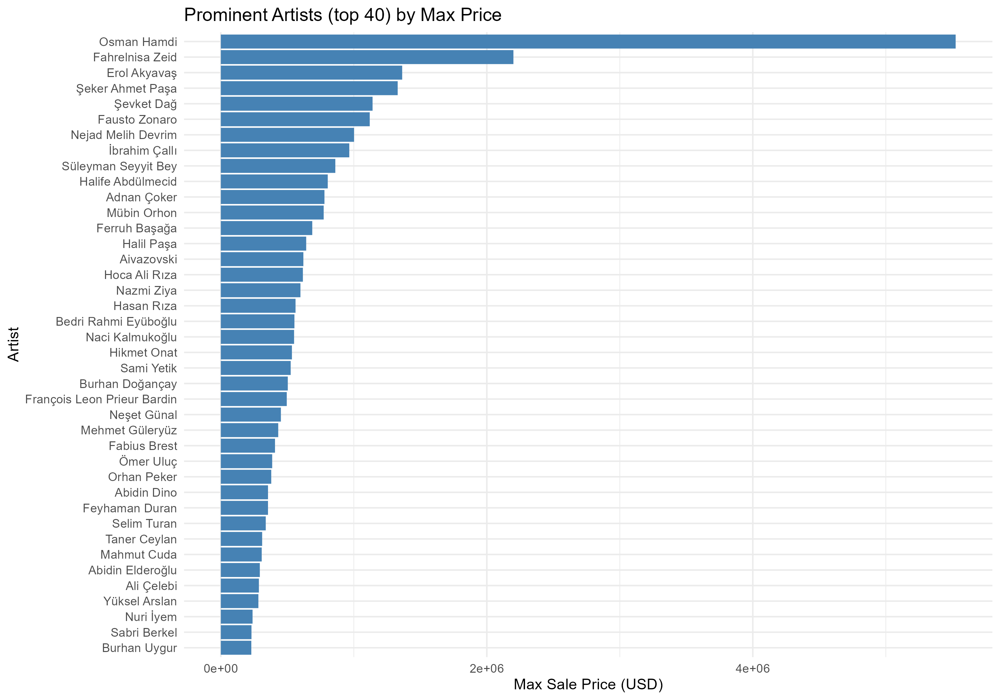
- Includes both historical masters (19th/20th century) and established contemporary figures
- Osman Hamdi Bey is at the top with $5.5M sale, followed by Fahrelnisa Zeid, Erol Akyavaş, Şeker Ahmet Paşa
- Remaining 60 artists range $10K-220K
- Among living artists, Taner Ceylan is at the top followed by Ergin İnan, Canan Tolon, Neş’e Erdok
Sale Rate Dynamics Over Time
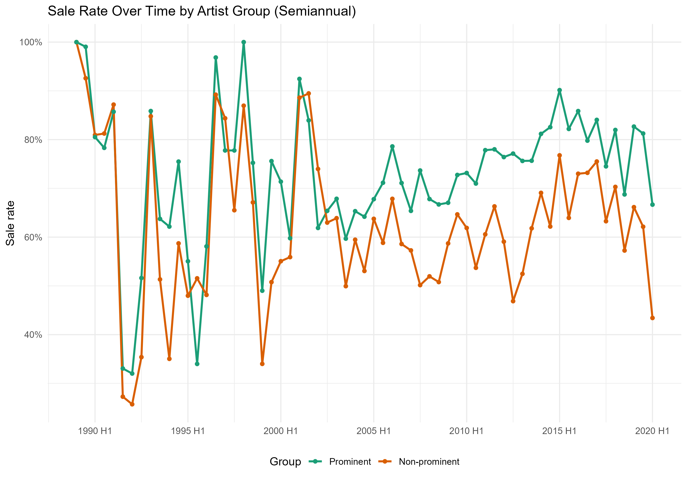
1989-1995: Both groups swing a lot, minimal gap
1996-2005:
- Prominent stabilize at 70%
- Non-prominent volatile 50-70%
- Gap widens
2006-2020:
- Prominent: resilient 70-85%
- Non-prominent: trending lower
- Gap persists
Price Distribution by Artist Segment

Prominent Artists (Teal):
- Median: $5,442 Mean: $17412 SD: $75593
- Wider price range (P10–P90: $935–$35,714)
- Includes masterpieces reaching $5.5M
Non-Prominent (Orange):
- Median: $1,311 Mean: $3028 SD: $6669
- Narrower absolute range (P10–P90: $271–$6,667)
- Few works exceed $50K
Sale Model
Artwork: Bedri Rahmi Eyüboğlu / Kartalbaba (detail)
Model Formulation
We estimate a probit model with fixed effects to predict sale probability:
\[ \begin{aligned} P(\text{sold}_i = 1 | \mathbf{X}_i) &= \Phi(\mathbf{X}_i' \boldsymbol{\beta} + \alpha_{a(i)} + \alpha_{h(i)} + \alpha_{t(i)}) \\ \end{aligned} \] where:
- \(\text{sold}_i\) is a binary indicator equal to 1 if artwork \(i\) sold at auction, 0 otherwise
- \(\Phi(\cdot)\) is the standard normal CDF (probit link function)
- \(\mathbf{X}_i\) includes artwork characteristics:
- \(\text{signed}_i\): indicator for signed artwork; \(\log(\text{size}_i)\): log area in cm² (width*height); \(\log(\text{aspect}_i)\): log aspect ratio (width/height)
- \(\text{medium}_i\) — art medium (oil, watercolor, etc.), base group = oil
- \(\text{material}_i\) — art material (canvas, paper, etc.) base group = canvas
- \(\alpha_{a(i)}\) — artist fixed effect
- \(\alpha_{h(i)}\) — auction house fixed effect (20+ sales)
- \(\alpha_{t(i)}\) — semi-annual time fixed effect
- Standard errors clustered at artist and time
Sale Model Probit Results
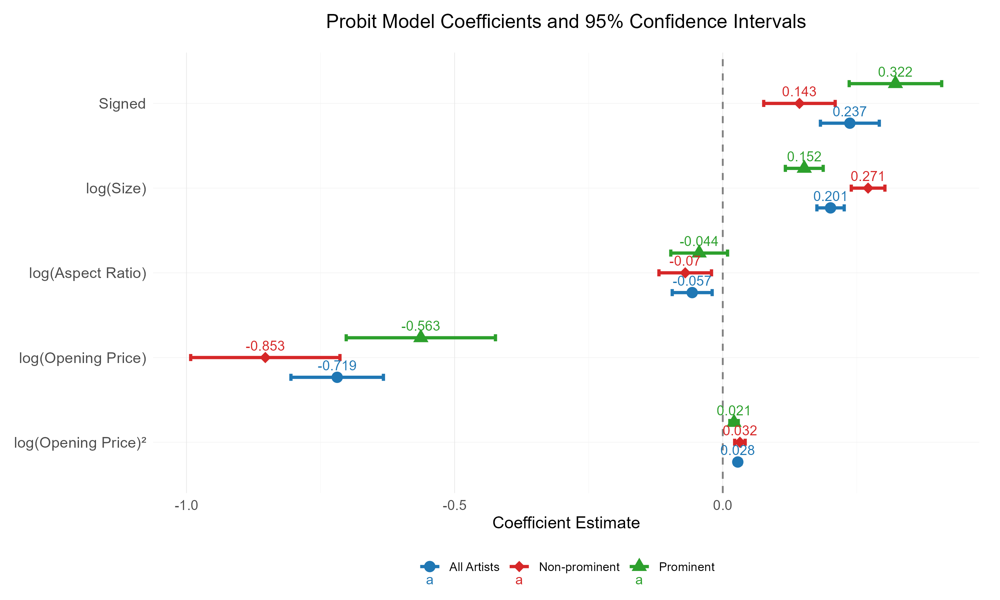Opening Price vs Sale Probability
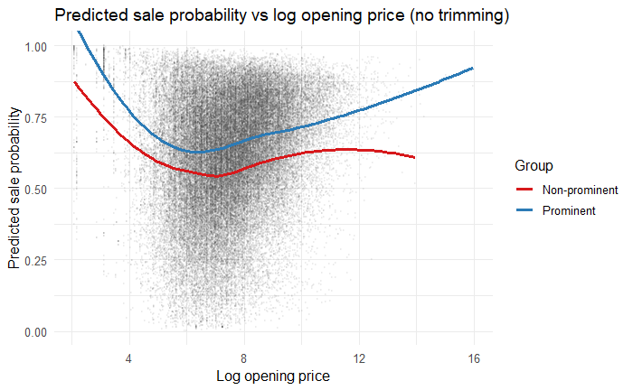
- Buyers discount heavily on non-prominent names; high reserves signal overvaluation or weak seller credibility
- At extreme prices, high reserves on prominent works signal confidence (attraction)
- Aggressive opening prices filter serious collectors; for non-prominent segment this shrinks the addressable market; for promnent segment, it selects the most committed buyers
Average Marginal Effects on Sale Probability
| Variable | All Artists | Prominent | Non-Prominent |
|---|---|---|---|
| Signature | 0.08*** | 0.107*** | 0.048*** |
| log(Size) | 0.06*** | 0.048*** | 0.09*** |
| log(Opening Price) | −0.10*** | -0.071*** | −0.136*** |
| log(Aspect Ratio) | −0.019** | -0.014 | −0.023** |
Signature matters most for prominent artists 0.107 or +10.7 percentage points (pp) but matters less for the rest (+4.8pp)
Size matters most for non-prominent artists (+9.0pp)
Opening price is the dominant penalty — especially for non-prominent (−13.6pp per log increase)
- A 10% higher opening prices decreases sale probability by approximately 1.4pp for non-prominent segment
- Unlike prominent works, non-prominent pieces require modest reserve pricing to ensure sales
Aspect ratio — has a small but significant effect
Medium, material effects, while statistically significant, are economically modest. This suggests buyers prioritize the artistic medium and the artist’s reputation far more than physical durability or presentation format.
Hedonic Regression Model
Artwork: Osman Hamdi Bey / Kablumbağa Terbiyecisi (detail)
Methodology
An artwork’s log auction price can be written as
\[ p_{it} = p_i + p_t + \varepsilon_{it}, \]
where \(p_{it}\) is the log price of object \(i\) at time \(t\), \(p_i\) captures the fixed (unobserved) quality of the object, \(p_t\) is the period price index (common market movement), and \(\varepsilon_{it}\) is an idiosyncratic shock.
Hedonic specification substitutes a parametric form for the fixed quality:
\[ p_{it} = \beta x_i + \sum_{t=1}^{T} \gamma_t D_t + \varepsilon_{it}, \]
\(x_i\): vector of observed attributes (signed dummy, size, aspect ratio, medium of art, material, artist fixed effects, auction house fixed effects), \(D_t\) is period dummy (half-year). Hedonic Price Index is constructed by \[ \text{Index}_t = 100 \times \exp(\gamma_t - \gamma_{\text{base}}), \] where base period is 1989-H1.
hedonic models control for quality by observable characteristics \(x\) (allowing use of all observations), while repeat‑sales treat \(p_i\) as an object fixed effect (identified only for items sold more than once).
Hedonic regression model estimation results (USD)
(Full results in Appendix Table 1)

Hedonic regression model estimation results (TL)
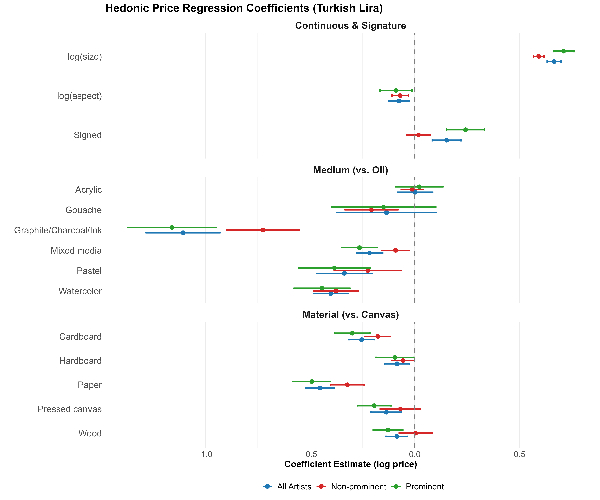Hedonic price index (in USD, aggregate)
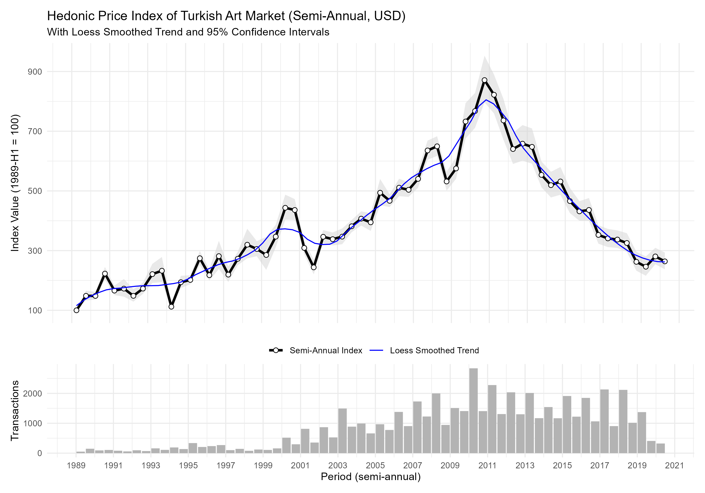
Hedonic price index (in USD, segmented)
Elite/prominent segment consistently above non-prominent especially post-late 1990s
Market driven by elite segment
- 2× gap by 2020 (prominent: ~250, non-prominent: ~160)
All segments share same trend and cycle
- Boom 1989-2011
- Bust 2011-2020
Hedonic price index (in TL, segmented)
Hedonic price index (in TL, log scale, with CPI)
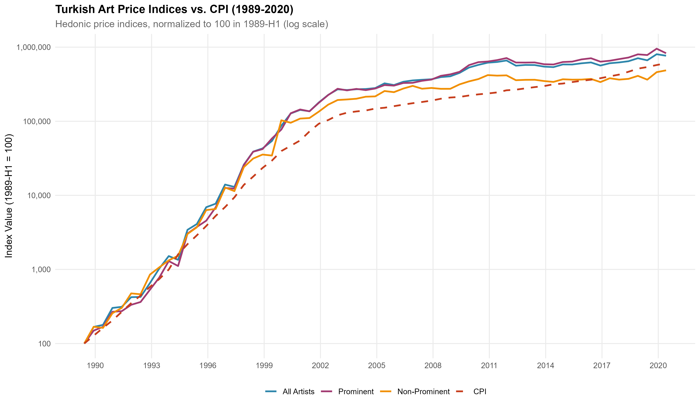
Turkish Art Market Performance (1989-2020)
| Index | Avg Nominal Return | SD Nominal | Avg Real Return | SD Real | Sharpe Ratio |
|---|---|---|---|---|---|
| Prominent Artists | 41.7% | 54.3% | 3.0% | 21.5% | 0.14 |
| All Artists | 40.2% | 50.5% | 2.1% | 19.3% | 0.11 |
| Non-Prominent Artists | 38.1% | 50.5% | 0.6% | 20.3% | 0.03 |
- High inflation environment:
- Nominal returns 38-42% vs real returns 0.6-3%
- Inflation eroded ~95% of nominal gains
- Prominent artists outperform:
- 3% real return vs 0.6% non-prominent
- 5× better Sharpe ratio (0.14 vs 0.03)
- Extreme volatility:
- 50-54% standard deviation
- Much higher than traditional assets
- Poor risk-adjusted returns:
- All Sharpe ratios near zero
- Barely compensated for risk taken
Asset Performance Comparison (1989-2020)
| Asset | Nominal Return | Real Return | Volatility | Sharpe |
|---|---|---|---|---|
| BIST100 📈 | 55.7% ± 105.8% | 13.1% ± 59.8% | Extreme | 0.22 |
| Gold 🥇 | 40.2% ± 37.7% | 4.1% ± 17.1% | Moderate | 0.24 |
| Prominent Artists 🎨 | 41.7% ± 54.3% | 3.0% ± 21.5% | High | 0.14 |
| All Artists 🎨 | 40.2% ± 50.5% | 2.1% ± 19.3% | High | 0.11 |
| Housing 🏠 | 11.5% ± 4.9% | 1.2% ± 6.3% | Low | 0.19 |
| Non-Prominent 🎨 | 38.1% ± 50.5% | 0.6% ± 20.3% | High | 0.03 |
Best Risk-Adjusted 🏆
- Gold (0.24)
- BIST100 (0.22)
- Housing (0.19)
Worst Performers 📉
- Prominent Art (0.14)
- All Art (0.11)
- Non-Prominent Art (0.03)
Prominent art had decent raw returns, but achieved them through extreme volatility. When you account for risk, it falls behind even housing.
Correlations
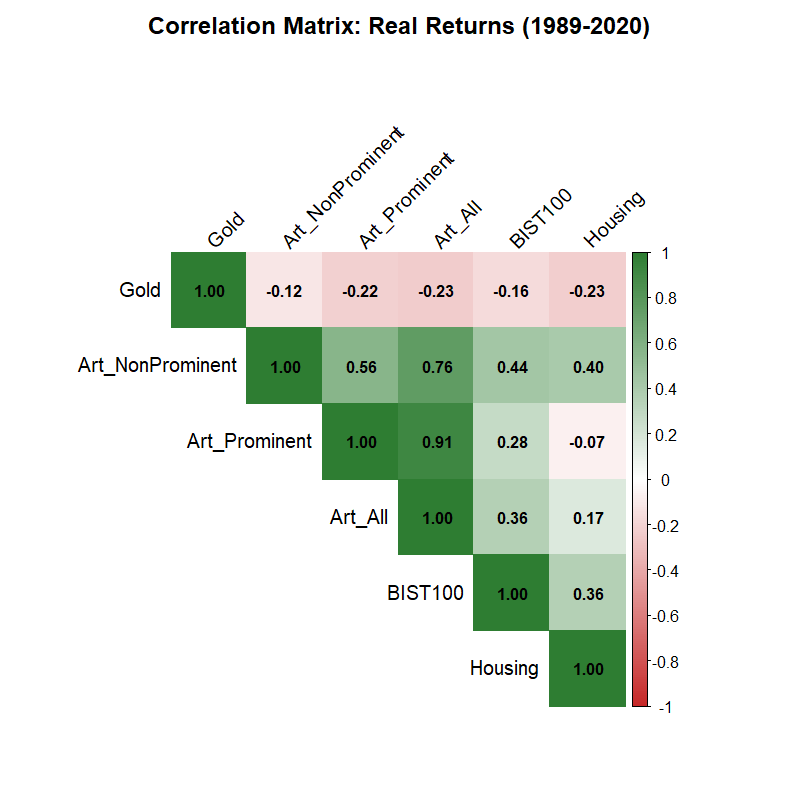
- Art segments move together
- Limited diversification within the art market
- When prominent art falls, all art tends to fall
- Mixing artist tiers doesn’t reduce risk significantly
- Weak Negative Correlation with Gold: suggests diversification benefit
- Weak-moderate positive correlation with stocks (0.36): limited diversification benefit
Conclusion
Turkish paintings as a Consumption Good, Not an Investment
Investment Performance
- Real returns: 0.6-3% annually (1989-2020)
- Sharpe ratios: 0.03-0.14 (art) vs. 0.19-0.24 (gold/stocks/housing)
- Art underperforms traditional assets by 40-85% in risk-adjusted terms
- High inflation eroded ~95% of nominal gains
Market Mechanism
- Strong heterogeneity based on artist prominence
- Sale probability dominated by signature (+8-11pp) and reserve pricing (-7 to -14pp)
- Non-prominent art shows high sensitivity to opening price (-13.6pp per log increase)
Investment Implications
✗ Poor risk-adjusted returns make art unsuitable as core investment
✓ Modest diversification benefit (negative correlation with gold, low correlation with stocks)
✓ Small allocation (<5%) justified only for consumption value and expert collectors
→ However, better alternatives exist (gold/stocks) for risk-adjusted returns
Appendix
Table 1: Probit Estimation Results
| All Artists | Prominent | Nonprominent | |
|---|---|---|---|
| Signed | 0.237*** | 0.322*** | 0.143*** |
| (0.028) | (0.044) | (0.034) | |
| log(size) | 0.201*** | 0.152*** | 0.271*** |
| (0.013) | (0.018) | (0.016) | |
| log(aspect) | -0.057** | -0.044 | -0.070** |
| (0.019) | (0.027) | (0.025) | |
| log(opening price) | -0.719*** | -0.563*** | -0.853*** |
| (0.044) | (0.071) | (0.071) | |
| log(opening price) sq. | 0.028*** | 0.021*** | 0.032*** |
| (0.003) | (0.004) | (0.005) | |
| Medium: Acrylic | 0.015 | 0.026 | -0.002 |
| (0.048) | (0.083) | (0.058) | |
| Medium: Gouache | -0.047 | -0.046 | -0.041 |
| (0.051) | (0.059) | (0.102) | |
| Medium: Graphite/Charcoal/Ink | -0.523*** | -0.493*** | -0.472*** |
| (0.059) | (0.072) | (0.103) | |
| Medium: Mixed media | -0.136*** | -0.107* | -0.171*** |
| (0.030) | (0.042) | (0.044) | |
| Medium: Pastel | -0.285*** | -0.386*** | -0.140 |
| (0.061) | (0.070) | (0.091) | |
| Medium: Watercolor | -0.106** | -0.077 | -0.129* |
| (0.037) | (0.048) | (0.057) | |
| Material: Cardboard | -0.093*** | -0.091** | -0.094* |
| (0.025) | (0.033) | (0.040) | |
| Material: Hardboard | -0.054* | -0.081* | -0.015 |
| (0.026) | (0.039) | (0.033) | |
| Material: Paper | -0.215*** | -0.244*** | -0.193*** |
| (0.036) | (0.048) | (0.054) | |
| Material: Pressed canvas | -0.101* | -0.167* | -0.021 |
| (0.046) | (0.078) | (0.056) | |
| Material: Wood | -0.122*** | -0.161*** | -0.065 |
| (0.031) | (0.043) | (0.044) | |
| Artist FE | Yes | Yes | Yes |
| Auction House FE | Yes | Yes | Yes |
| Time FE | Yes | Yes | Yes |
| N | 70417 | 34319 | 36063 |
| R2 | 0.133 | 0.115 | 0.145 |
| R2 Adj. | 0.116 | 0.106 | 0.117 |
Notes: Probit estimation results. Dependent variable is Sale which equals 1 if the artwork is sold and 0 otherwise. Oil is the base group for Medium, Canvas is the base group for Material. Standard errors are clustered at artist level.
+ p < 0.1, * p < 0.05, ** p < 0.01, *** p < 0.001
Table 2: Average Marginal Effects
| All Artists | Prominent | Nonprominent | |
|---|---|---|---|
| log(aspect) | -0.019** | -0.014 | -0.023** |
| (0.006) | (0.009) | (0.009) | |
| log(size) | 0.066*** | 0.048*** | 0.090*** |
| (0.005) | (0.007) | (0.006) | |
| log(opening price) | -0.100*** | -0.071*** | -0.136*** |
| (0.007) | (0.012) | (0.009) | |
| Signed | 0.080*** | 0.107*** | 0.048*** |
| (0.010) | (0.018) | (0.011) | |
| cardboard - canvas | -0.030*** | -0.028* | -0.031* |
| (0.009) | (0.011) | (0.014) | |
| hardboard - canvas | -0.017* | -0.025* | -0.005 |
| (0.009) | (0.013) | (0.011) | |
| paper - canvas | -0.071*** | -0.079*** | -0.065*** |
| (0.013) | (0.019) | (0.019) | |
| pressed canvas - canvas | -0.033* | -0.053* | -0.007 |
| (0.015) | (0.026) | (0.019) | |
| wood - canvas | -0.040*** | -0.051** | -0.022 |
| (0.011) | (0.016) | (0.015) | |
| Acrylic - Oil | 0.005 | 0.008 | -0.001 |
| (0.016) | (0.026) | (0.019) | |
| Gouache - Oil | -0.015 | -0.015 | -0.014 |
| (0.017) | (0.019) | (0.034) | |
| Graphite/Charcoal/Ink - Oil | -0.177*** | -0.167*** | -0.158*** |
| (0.021) | (0.030) | (0.034) | |
| Mixed media - Oil | -0.045*** | -0.034* | -0.057*** |
| (0.010) | (0.015) | (0.015) | |
| Pastel - Oil | -0.096*** | -0.129*** | -0.047 |
| (0.021) | (0.027) | (0.031) | |
| Watercolor - Oil | -0.035** | -0.024 | -0.043* |
| (0.013) | (0.016) | (0.019) |
Notes: Average marginal effects based on probit results. Standard errors in parentheses.
+ p < 0.1, * p < 0.05, ** p < 0.01, *** p < 0.001
Table 3: Hedonic art price regressions (in USD)
| All Artists | Elite/Prominent | Nonprominent | |
|---|---|---|---|
| log(size) | 0.666*** | 0.710*** | 0.590*** |
| (0.017) | (0.025) | (0.013) | |
| log(aspect) | -0.076** | -0.090* | -0.071*** |
| (0.025) | (0.038) | (0.020) | |
| Signed | 0.151*** | 0.241*** | 0.016 |
| (0.034) | (0.045) | (0.029) | |
| Medium categories | |||
| Acrylic | 0.000 | 0.019 | -0.013 |
| (0.043) | (0.058) | (0.026) | |
| Gouache | -0.137 | -0.151 | -0.207** |
| (0.121) | (0.127) | (0.065) | |
| Graphite/Charcoal/Ink | -1.111*** | -1.164*** | -0.727*** |
| (0.090) | (0.107) | (0.087) | |
| Mixed media | -0.216*** | -0.264*** | -0.094** |
| (0.032) | (0.044) | (0.033) | |
| Pastel | -0.334*** | -0.382*** | -0.222** |
| (0.068) | (0.086) | (0.082) | |
| Watercolor | -0.404*** | -0.446*** | -0.380*** |
| (0.043) | (0.069) | (0.055) | |
| Material categories | |||
| Cardboard | -0.254*** | -0.300*** | -0.177*** |
| (0.031) | (0.043) | (0.031) | |
| Hardboard | -0.085** | -0.095* | -0.058* |
| (0.030) | (0.046) | (0.028) | |
| Paper | -0.451*** | -0.491*** | -0.319*** |
| (0.035) | (0.046) | (0.041) | |
| Pressed canvas | -0.138*** | -0.196*** | -0.070 |
| (0.037) | (0.041) | (0.051) | |
| Wood | -0.086** | -0.128*** | 0.003 |
| (0.026) | (0.036) | (0.041) | |
| Artist FE | Yes | Yes | Yes |
| Auction house FE | Yes | Yes | Yes |
| Time FE | Yes | Yes | Yes |
| N | 54701 | 31739 | 22962 |
| R2 Adj. | 0.839 | 0.808 | 0.802 |
Notes: Dependent variable is log of sale price in USD. Base group of Signed is “no signature”. Base group for medium is “Oil”, base group of material is “Canvas”. Standard errors (in parentheses) are clustered at artist and time (semiannual). 1989-1 (first half-year) is excluded (base period). + p < 0.1, * p < 0.05, ** p < 0.01, *** p < 0.001
Table 4: Hedonic art price regressions (in TL)
| All Artists | Prominent | Non-prominent | |
|---|---|---|---|
| log(size) | 0.665*** | 0.710*** | 0.591*** |
| (0.017) | (0.025) | (0.013) | |
| log(aspect) | -0.076** | -0.090* | -0.070*** |
| (0.025) | (0.039) | (0.020) | |
| Signed | 0.152*** | 0.242*** | 0.018 |
| (0.035) | (0.046) | (0.029) | |
| Medium categories | |||
| Acrylic | 0.001 | 0.021 | -0.012 |
| (0.043) | (0.058) | (0.027) | |
| Gouache | -0.135 | -0.149 | -0.207** |
| (0.121) | (0.127) | (0.065) | |
| Graphite/Charcoal/Ink | -1.106*** | -1.159*** | -0.725*** |
| (0.091) | (0.108) | (0.088) | |
| Mixed media | -0.216*** | -0.264*** | -0.092** |
| (0.032) | (0.044) | (0.033) | |
| Pastel | -0.336*** | -0.384*** | -0.224** |
| (0.068) | (0.087) | (0.082) | |
| Watercolor | -0.401*** | -0.443*** | -0.376*** |
| (0.042) | (0.068) | (0.054) | |
| Material categories | |||
| Cardboard | -0.254*** | -0.299*** | -0.177*** |
| (0.031) | (0.043) | (0.031) | |
| Hardboard | -0.085** | -0.095* | -0.056* |
| (0.030) | (0.046) | (0.028) | |
| Paper | -0.453*** | -0.492*** | -0.322*** |
| (0.035) | (0.046) | (0.041) | |
| Pressed canvas | -0.136*** | -0.194*** | -0.069 |
| (0.037) | (0.041) | (0.049) | |
| Wood | -0.086** | -0.128*** | 0.004 |
| (0.026) | (0.036) | (0.040) | |
| Artist FE | Yes | Yes | Yes |
| Auction house FE | Yes | Yes | Yes |
| Time FE | Yes | Yes | Yes |
| N | 54701 | 31739 | 22962 |
| R2 Adj. | 0.892 | 0.888 | 0.868 |
Notes: Dependent variable is log of sale price in TL. Base group of Signed is “no signature”. Base group for medium is “Oil”, base group of material is “Canvas”. Standard errors (in parentheses) are clustered at artist and time (semiannual). 1989-1 (first half-year) is excluded (base period). + p < 0.1, * p < 0.05, ** p < 0.01, *** p < 0.001
Liquidity by Artist group
| Artist Group | N Offered | N Sold | N Unsold | Sale Rate |
|---|---|---|---|---|
| Prominent | 43,020 | 31,748 | 11,272 | 73.8% |
| Non-Prominent | 40,450 | 24,766 | 15,684 | 61.2% |
| Anonymous | 3,181 | 1,637 | 1,544 | 51.5% |
| Other (nlots<15) | 13,856 | 7,312 | 6,544 | 52.8% |
| Total | 100,507 | 65,463 | 35,044 | 65.1% |
- Prominent artists have the highest sale rate (73.8%)
- Anonymous artworks have the lowest (51.5%)
- Non-prominent but established artists fall in the middle (61.2%) indicating meaningful market depth.
- Artists with few items also have low sale rates (52.8%) which may be a sign of limited marketing attention, weaker collector demand, and greater uncertainty about quality or attribution.
- Overall market sale rate: 65.1%
Auction houses
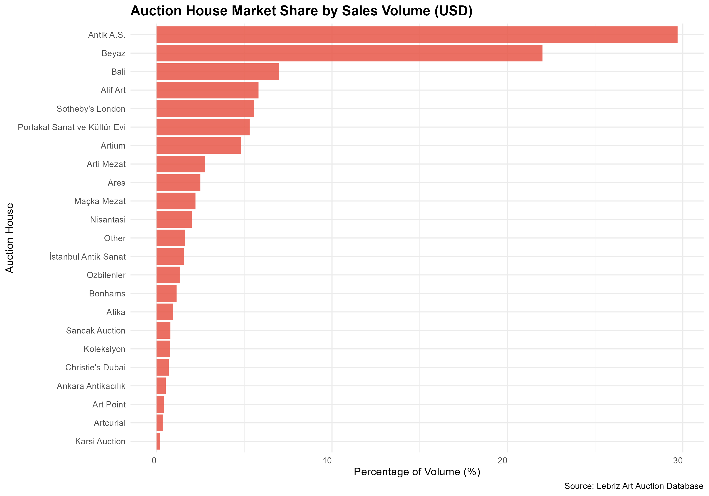
Antik A.S. dominates by volume but not transactions — They capture ~30% of sales volume but only ~16% of transactions, indicating they handle higher-priced artworks.
- Volume vs. Transaction concentration — this graph shows high concentration (top 3 houses), while transactions (in the next slide) are more dispersed. High-value sales concentrate in fewer houses, but transaction volume spreads across more players.
Auction houses
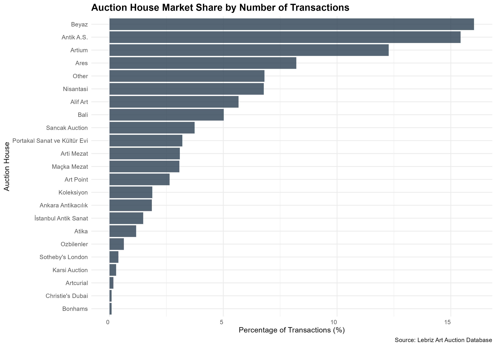
Beyaz leads by transaction count - They have the most transactions (~17%) but only ~13% of volume. This indicates they sell more items at lower average prices.
Market Structure — Three auction houses (Antik A.S., Beyaz, Bali) account for ~50% of total volume but a smaller share of transaction count.